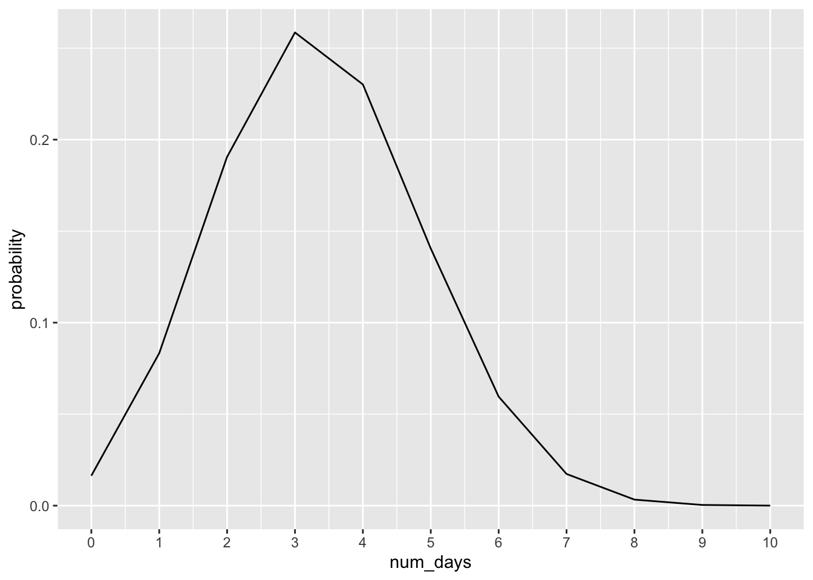
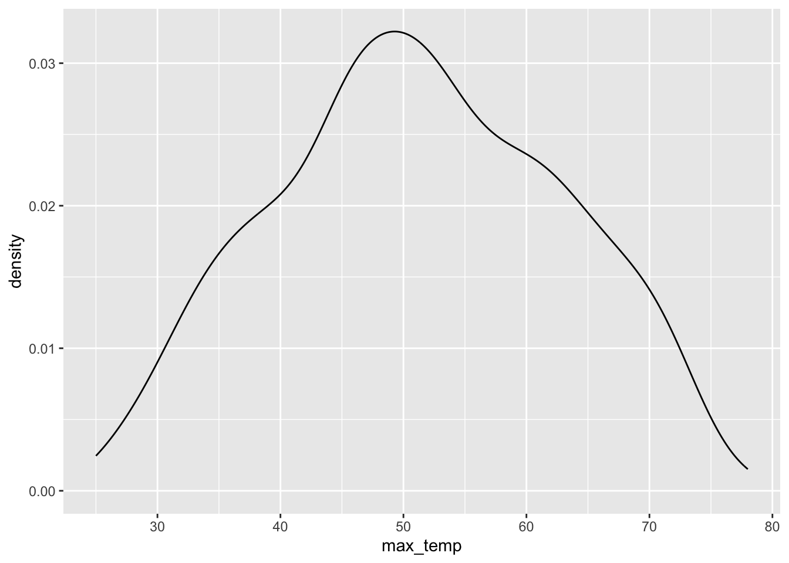
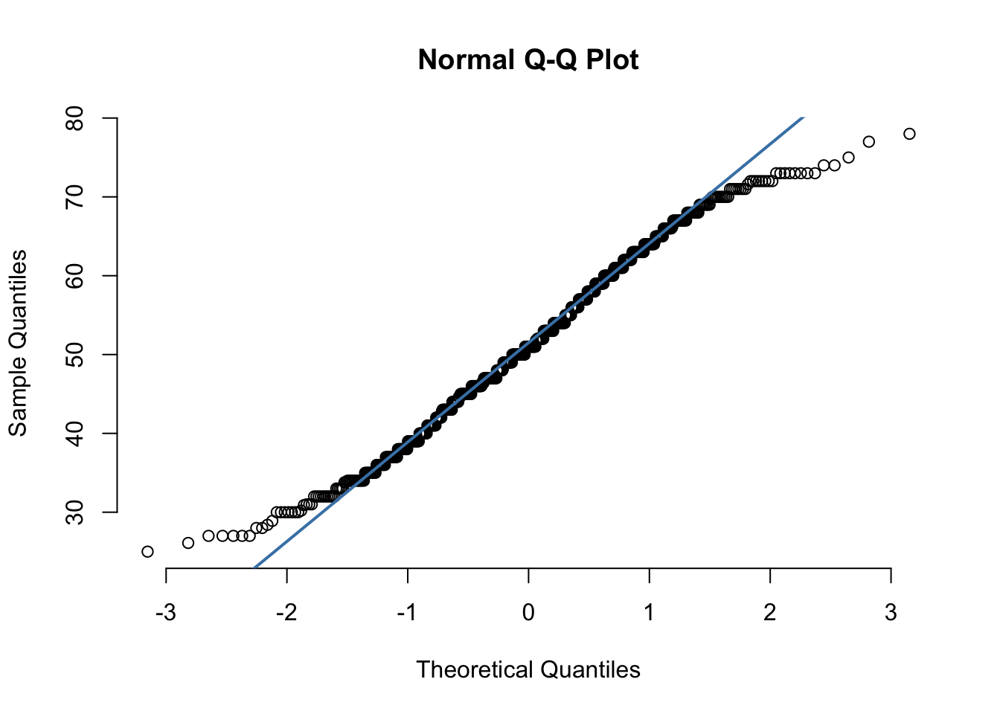

library(tidyverse)
library(sf)
library(tmap)
library(stars)
library(gstat)
library(terra)
library(sp)
library(tigris)
#read in rainfall data
ch_rainfall <- read_csv("https://drive.google.com/uc?export=download&id=1wYLHVVsemxQVjsdsmSzV9m0G6eLR_YK4")
#read in pm data
pm_nc <- read_csv("https://drive.google.com/uc?export=download&id=19Axv5_bv7p4LbDWNDs4TmdFi3gfYeNXc")
#read in january data
rdu_jan <- read_csv("https://drive.google.com/uc?export=download&id=1ABpiu5ABzAo-WXbYBp9LWgN8-lHuFQR9")9 Probability and Probability Distributions
In this chapter we will calculate empirical probability and apply discrete and continuous theoretical probability distributions to estimate probability (based on empirical estimates). We will also practice writing basic R commands for data manipulation. We will use two different probability distributions:
- Binomial Distribution: The Binomial Distribution is a discrete probability distribution (i.e. each trial has only two possible outcomes). It models the number of “successes” in a fixed number of independent trials.
- Normal Distribution: The Normal Distribution is a continuous probability distribution that describes how likely different values of a random variable are.
Both of these probability distributions are theoretical. A theoretical distribution is a mathematically defined model that describes how outcomes of a random process are expected to behave. We use them with empirical data because they let us approximate the underlying pattern, calculate probabilities for events we haven’t observed, and make predictions or inferences about the entire population, even from a limited sample.
We will use the following spatial datasets:
- Daily rainfall in Chapel Hill from 1891-2025 from North Carolina State Climate Office
- Daily particulate matter 2.5 across North Carolina from 2016-2020 from the CDC National Environmental Public Health Tracking Network
- January maximum daily temperatures at RDU from ASOS weather station monitoring from Iowa Environmental Mesonet
To follow along with this tutorial, make a new .Rmd document. As you move through the tutorial add chunks, headers, and relevant text to your document.
9.1 Reading in Data
Paste the following code into a chunk at the top of your document
9.2 Calculating Empirical Probability of Poor Air Quality
Empirical probability is the likelihood of an event based on data from an actual experiment or observational data. To calculate empirical probability, we can use the simple formula:
P(E) (probability of an event) = f (number of times the event occurred) / n (total number of trials or observations)
Let’s practice some basic data manipulation and calculate the empirical probability of a moderate or worse air quality at locations across North Carolina.
Q1. What does each observation (each row) in the pm_nc object represent? How do you know?
Q2. Based on Q1, what needs to happen to the data for us to be able to apply the empirical probability formula?
# flag for moderate or worse (1 if moderate or worse 0 if not)
flagged_pm <- pm_nc |> mutate(aq_flag = ifelse( pm_val > 12, 1, 0))Now that we know, for each observation (date) at each location (lat, lon), whether or not the observation qualifies as an event, we can group the data to get the f (number of times the event occurred) and the n (total observations)
#group by lat/lon point and summarize
grouped_pm <- flagged_pm |> group_by(lat, lon) |> summarise(tot_flag = sum(aq_flag), tot_ob = n())Q3. Create a new object called pm_prob and calculate a new field that calculates the empirical probability of a moderate or worse air quality day at each lat/lon location. You will use the mutate command.
Q4. Use this command grouped_pm_sf <- YOUR_NEWOBJECT |> st_as_sf(coords= c("lon", "lat"), crs = 4326) to turn the data into a spatial object.
Q5. Create a histogram of probability values. Then make a map of probability across the state.
9.3 Applying the Binomial Distribution to Chapel Hill Precipitation Data
The binomial distribution is a theoretical probability model that helps us predict how many times an event (a “success”) will happen in a fixed number of trials. The model assumes each trial is independent and the probability of success is the same each time. In reality, we often don’t know the true probability of an event. But we can get a good estimate of that probability using empirical data.
In this part of the tutorial, we will calculate the empirical probability of rainfall on a given day in Chapel Hill using daily data from 1891-2025 (note that this is a very simplified probability, given that trends differ by year and seasons) to answer questions like:
Over 10 days in Chapel Hill, what’s the most likely number of rainy days?
Over 10 days in Chapel Hill, what’s the probability that we have 0 rainy days?
We start by creating a new variable with a binary outcome (rain = 1, no rain = 0) and using basic R commands to calculate the empirical probability
#create binary object
ch_rainfall_binary <- ch_rainfall |> mutate(rain = ifelse(prec_in > 0, 1, 0))
#calculate empirical probability
total_days <- length(ch_rainfall_binary$date)
total_rainfall_days <- sum(ch_rainfall_binary$rain)
p_rain <- total_rainfall_days / total_daysNow we know that the empirical probability of any amount of rain on a given day is .337, or 33.7%. Using this probability, we can apply the binomial distribution and plot the results.
probability_days <- tibble(
num_days = 0:10,
#here is the main probability function
probability = dbinom(x = 0:10, size = 10, prob = p_rain)
)
#plotting probability by day
ggplot(probability_days, aes(x = num_days, y = probability)) +
geom_line() + scale_x_continuous(breaks = 0:10)
Q6. Based on the outcome of the binomial distribution, what are the answers to the questions above?
We can also use the binomial distribution to calculate cumulative probabilities. For instance, if we wanted to know the probability that we would have 3 days or less, we could calculate that probability by using the pbinom function (which calculates cumulative probability), instead of the dbinom function
less3_days <- pbinom(3, 10, p = p_rain)To calculate the probability of having more than 3 days we could calculate it by taking the complement
more3_days <- 1 - less3_days9.4 Mini Challenge
Using the script above, use the binomial distribution and geometric distribution to answer the following questions:
- Over 10 days in Chapel Hill, what’s the most likely number of days with rain over .5 inches?
- What is the cumulative probability that Chapel Hill will get at least 3 days of rain over .5 inches in the next 10 days?
9.5 The Normal Distribution
The normal distribution is a theoretical model that describes how continuous data tend to cluster around an average, forming a smooth, symmetric, bell-shaped curve. Although no real dataset is perfectly normal, many natural variables behave approximately this way because they are influenced by many small, independent factors. January temperatures at a specific location (in our case, RDU airport) are a good example: most days fall near the typical mid-winter temperature, with fewer extremely warm or cold days. By estimating the mean and standard deviation from actual January data, we can use the normal distribution to model and predict temperature patterns.
When we plot January daily maximum temperatures, we can see that the output is approximately normal (in a vague sense).
#density plot of max_temp variable
ggplot(rdu_jan, aes(x = max_temp)) + geom_density()
If the data was perfectly normal, the distribution would look like this:
#create normal distribution
jan_norm <- tibble(
temp = seq(min(rdu_jan$max_temp), max(rdu_jan$max_temp)),
density = dnorm(temp, mean(rdu_jan$max_temp), sd(rdu_jan$max_temp))
)
#plot normal distribution
ggplot(jan_norm, aes(x = temp, y = density)) +
geom_line() 
A Q–Q plot is a common tool for assessing whether a dataset follows a normal distribution. In a Q–Q plot, data that are normally distributed should fall roughly along the reference line. In our case, the points align reasonably well in the center of the distribution, but the tails show clear deviations from the line. This indicates that while the bulk of the data is approximately normal, the extreme values do not follow the normal distribution as closely.
Because of this, using the normal distribution may still provide reasonable approximations for probabilities near the center of the distribution, but estimates involving the tails (especially rare events) should be interpreted with caution. Tail deviations suggest that the normal distribution may underestimate or overestimate the likelihood of extreme outcomes, so empirical or alternative distributional methods may be more appropriate for modeling rare events.
qqnorm(rdu_jan$max_temp, pch = 1, frame = FALSE)
qqline(rdu_jan$max_temp, col = "steelblue", lwd = 2)
To apply the normal distribution, we could calculate the probability that a day in January has a maximum temperature of 60 or above by calculating the cumulative density function.
#pnorm calculates the CDF up to the value. So we need to do 1-pnorm to get the probability above that value
prob <- 1 - pnorm(60, mean = mean(rdu_jan$max_temp), sd = sd(rdu_jan$max_temp))This shows us that there is a 22.4% chance that a day in January at RDU will have a maximum be above 60 degrees.
9.6 Mini Challenge
Using the code above, calculate the probability that a day has a maximum temperature of 83 degrees or above using the normal distribution. Then calculate the empirical probability using the observed values. Discuss the following questions:
How do the theoretical and empirical probabilities differ?
Why might this be the case?
What are potential problems in applying the normal distribution to estimate rare events in this dataset?